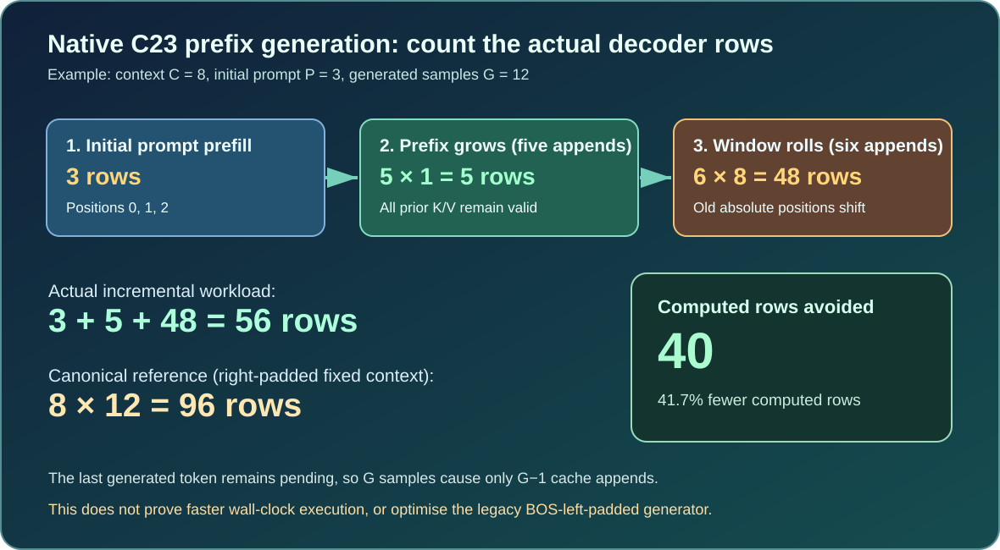

Learning objectives
By the end of this lesson you will be able to distinguish two different ways to place a short prompt inside a Transformer context, create a persistent growing-prefix generation session in native C23, calculate its actual KV-cache workload, and explain precisely when cache reuse stops being an optimisation.
1. Why two correct positional policies may generate different tokens
Imagine a small Umicom Studio assistant which receives three byte tokens representing the start of a C declaration, int. The educational decoder was trained with learned absolute positions: position zero has one embedding, position one another, and so on. The existing full-context generator places BOS before a short prompt. If the model has an eight-token context, int appears at positions five, six and seven. That generator always predicts from the last position.
A different, equally well-defined policy begins immediately with int at positions zero, one and two. The next token is sampled using the logits from position two. This leaves room for five additional token rows before the first eviction. Different input positions mean different model inputs; therefore the two policies must not be expected to generate the same sequence. Changing the padding of the historical generator without an explicit opt-in would silently change existing applications, tests and checkpoint evaluations.
The new UmiAiTrainingPrefixGenerationSession implements the second policy, without changing the first. The model is still the same native C23 decoder and the attention mathematics remain inside UmiAiTrainingKvCache. The sample decision still belongs to UmiAiTrainingSampleLogitsNucleus. Our addition is just controlled orchestration of these established services.

2. The session lifecycle
The new session follows the same explicit ownership principles as other Umicom Framework modules. The caller creates and owns the decoder; the session borrows it, holds its own cache and RNG, then releases them on destruction. You may request one output token at a time, inspect the work performed, or stop at any point by destroying the session. Do not train or destroy the decoder while a session is alive.
Each call to Next produces one token. The first call samples directly from logits calculated during prefix prefill. The returned token becomes pending. The second call appends that token to the cache before sampling the second output. This avoids an unnecessary final decoder call when the user requests exactly one token; it is why twelve generated tokens cause eleven append operations.
Native C23 example: stream into an Umicom source-code assistant
#include "umicom/ai/training/prefix_generation.h"
#include "umicom/ai/training/byte_tokenizer.h"
#include <inttypes.h>
#include <stdint.h>
#include <stdio.h>
/* The application already owns a valid decoder named model. */
const size_t sourcePrefix[] = {109U, 114U, 120U}; /* 'i', 'n', 't' */
const UmiAiTrainingNucleusOptions policy = {1.0F, 1U, 1.0F};
UmiAiTrainingPrefixGenerationSession *session = NULL;
UmiStatus status = UmiAiTrainingPrefixGenerationSessionCreate(
model, sourcePrefix, 3U, &policy, UINT64_C(7801), &session);
if (status == UMI_STATUS_OK) {
for (size_t tokenIndex = 0U; tokenIndex < 6U; ++tokenIndex) {
size_t nextTokenId = 0U;
status = UmiAiTrainingPrefixGenerationSessionNext(
session, &nextTokenId);
if (status != UMI_STATUS_OK) break;
/* An application may render this token; do not execute it. */
printf("sample %zu: %zu\n", tokenIndex, nextTokenId);
}
UmiAiTrainingPrefixGenerationSessionDestroy(session);
}This is an excerpt that assumes a model has already been created using UmiAiTrainingDecoderCreate. It deliberately does not execute generated code or pass model output to a compiler. Like the earlier educational laboratory, this tiny model is not qualified to generate trustworthy financial processing code. A production Umicom Bank or Treasury Management System must keep its financial calculations and security controls independent of model output.
3. Calculate precisely what is saved
Use three variables: C is the maximum context length, P is the number of initial prompt tokens, and G is the requested number of generated tokens. Because the final output is pending, the number of append operations is A = G - 1. While the prefix is shorter than C, each append costs one computed token row. When the prefix is full, each append costs C token rows because every surviving token moves to a different learned absolute position.
A = G - 1
S = min(A, C - P) /* Safe incremental appends. */
R = A - S /* Full-window rebuild appends. */
canonicalRows = C * G
cachedRows = P + S + C * R
rowsAvoided = canonicalRows - cachedRowsFor an eight-token context, a three-token prompt and twelve generated tokens, A is eleven, S is five and R is six. The canonical fixed-context decoder evaluates 8 × 12 = 96 rows. The growing-prefix session performs 3 + 5 + 6 × 8 = 56 rows. The difference is 40 avoided rows, representing 41.7% less computed token-row work for this specific sequence. These are decoder work counts. They do not measure CPU time, latency or user-visible throughput.
If the prompt already contains eight tokens, S is zero. Every subsequent token forces a rollover. For twelve generated tokens, the cache performs 96 rows, exactly matching the canonical row count. The cache may still be useful for streaming or cancellation, but its row count does not support a speedup claim.
4. Ask the Framework to calculate the answer
#include "umicom/ai/training/prefix_generation.h"
#include <inttypes.h>
#include <stdio.h>
/* decoderConfig is an existing, valid decoder configuration. */
UmiAiTrainingPrefixGenerationWorkEstimate work = {0};
UmiStatus status = UmiAiTrainingPrefixGenerationWorkEstimateBuild(
&decoderConfig, 3U, 12U, &work);
if (status == UMI_STATUS_OK) {
printf("Canonical rows: %" PRIu64 "\n", work.canonicalComputedRows);
printf("Cache rows: %" PRIu64 "\n", work.cachedComputedRows);
printf("Rebuilds: %" PRIu64 "\n", work.cachedWindowRebuilds);
}The estimator delegates decoder-shape validation and cache allocation sizing to the existing Framework service. The returned heap estimate is one cache-owner allocation, not the entire application memory footprint. The result remains unchanged if the input is invalid; this is a deliberate failure-atomic API contract.
5. Practical exercises
- For C = 8, P = 3 and G = 6, calculate the append count, cache rows and percentage saved. At which generated-token number will the next append cause the first rollover?
- Repeat the calculation for C = 8, P = 8 and G = 6. Why does no saving remain?
- Explain why the session copies the sampling policy and seed state, but borrows the decoder.
- Describe the difference between cancelling a session and generating an EOS token. Does this laboratory stop automatically at EOS?
- In an Umicom Studio code-assistance panel, identify which Framework component should own the model session and which component should own the graphical display.
Engineering principle: introduce a new positional policy explicitly, preserve the old API, reuse established maths, and report saved computation without claiming an unmeasured speedup.